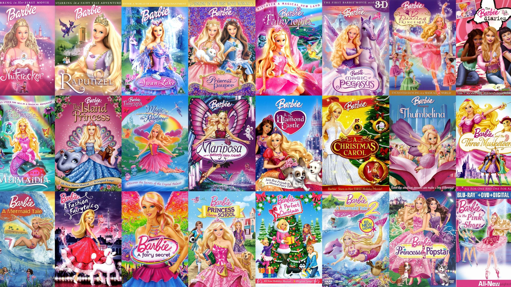
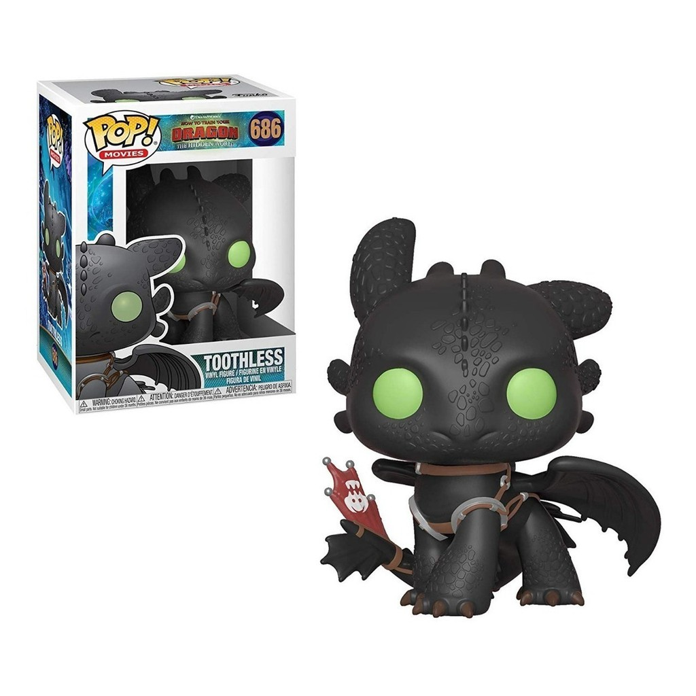
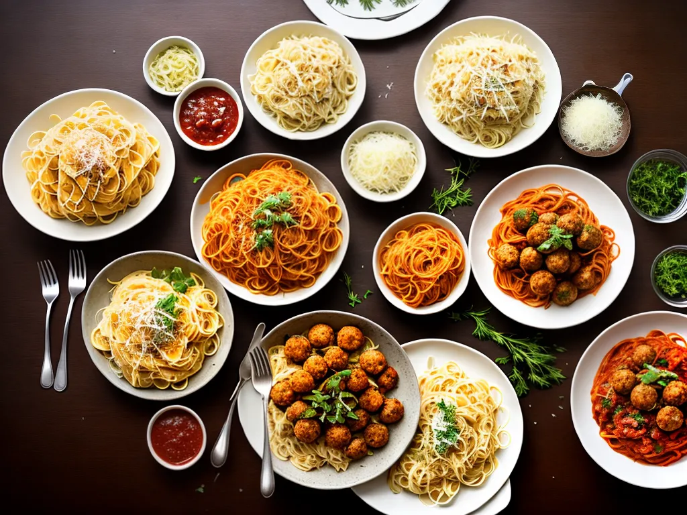

Nome: Roberta Concolatto
Curso: Técnico de Informática para Internat Integrado ao Ensino Médio
3° ano do Ensino Médio - Campus Veranópolis
Aqui estão os projetos desenvolvidos para a disciplina de Desenvolvimento Web ao longo do ano.

Millicent’s é um portal interativo criado para reunir fãs dos filmes da Barbie em um só lugar. O projeto foi desenvolvido como parte de uma atividade educacional, com o objetivo de aplicar conhecimentos em HTML e CSS na construção de um site completo e funcional. O portal conta com uma página principal acolhedora, uma área de cadastro de membros, um fórum de discussões, uma galeria de imagens encantadora e uma página de contato. Tudo foi pensado para proporcionar uma experiência divertida, nostálgica e colaborativa entre os fãs da boneca mais famosa do mundo. 💖
Veja o site
Este projeto tem como objetivo colocar em prática os conhecimentos de JavaScript, HTML e CSS, criando um mini e-commerce funcional e visualmente organizado. A proposta envolve o uso de objetos JSON para armazenar os dados dos produtos, e o método forEach() para renderizar dinamicamente os itens na página.
Veja o siteDisneyClub é um catálogo online criado como trabalho final da disciplina de Desenvolvimento Web. O site apresenta uma seleção de filmes icônicos da Disney e Pixar, com informações como título, ano de lançamento, nota, descrição e imagem, tudo organizado de forma dinâmica e visualmente atrativa. Utilizando HTML, CSS, JavaScript e Bootstrap, o projeto permite explorar os dados através de cartões criados a partir de um array de objetos em JSON, oferecendo uma experiência interativa para os fãs dessas animações atemporais.
Veja o site
O Pasta Restaurant é um projeto fictício de site institucional criado como um exercício utilizando Bootstrap 5. O site representa um restaurante italiano localizado em Tiradentes, Minas Gerais, fundado por Luca Romano, um chef ítalo-brasileiro que valoriza a tradição da culinária italiana e a produção artesanal de massas. O objetivo do projeto é desenvolver um mini-site com pelo menos três páginas: a página inicial, que apresenta o restaurante, seus diferenciais e imagens; a página de serviços ou produtos, com um cardápio ilustrado e descrições; e a página de contato, que inclui um formulário, perguntas frequentes em accordion, alertas e um modal com o endereço da empresa. O foco do projeto está na utilização dos componentes do Bootstrap para garantir uma boa organização visual, responsividade e uma experiência agradável ao usuário, sem a necessidade de programar JavaScript manualmente.
Veja o siteEsse projeto consiste na criação de um site pessoal utilizando HTML e Bootstrap 5, com foco em responsividade e navegação entre páginas, usando componentes prontos do Bootstrap. O objetivo é montar um mini site com pelo menos quatro páginas HTML: uma página inicial com introdução ou destaque do perfil, uma página com informações pessoais e contato, uma página exibindo projetos em cards e outra listando habilidades, usando progress bars ou badges. O site conta com uma barra de navegação para facilitar o acesso entre as páginas, além de um carrossel de imagens para destacar conteúdos visuais, como fotos e projetos. A proposta valoriza o uso completo do Bootstrap como solução para estilização e organização, dispensando CSS personalizado, para que o aluno aprenda a estruturar sites modernos e responsivos de forma prática.
Veja o site